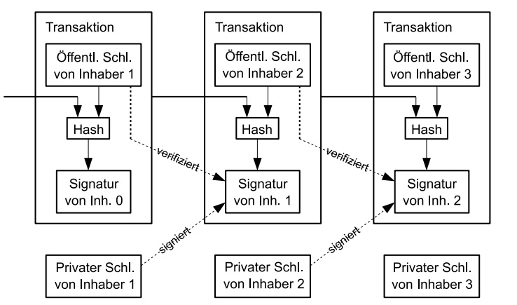
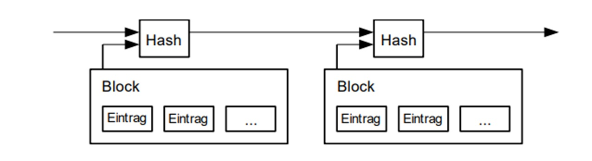
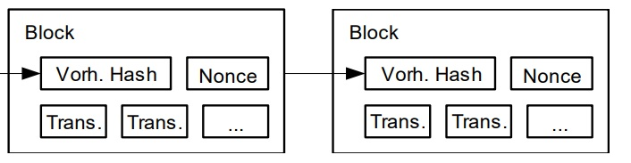
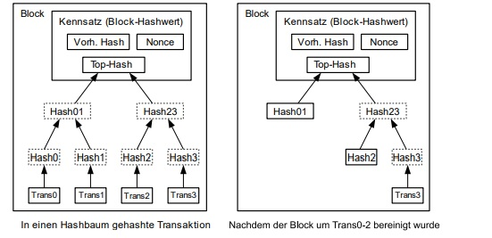
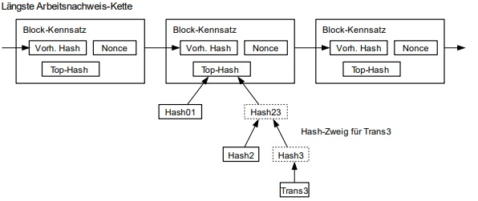
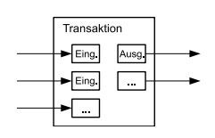
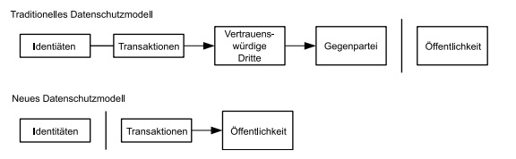

White Paper - Das originale Regelwerk von Bitcoin auf deutsch übersetzt
Bitcoin: Ein elektronisches Peer-to-Peer-Cash-System
Satoshi Nakamoto
satoshin@gmx.com
www.bitcoin.org
Abstrakt. Ein reine Peer-to-Peer-Version elektronischen Cashs würde es ermöglichen, Onlinezahlungen ohne Rückgriff auf ein Finanzinstitut direkt von einer Partei zur anderen zu senden. Digitale Signaturen stellen einen Teil der Lösung bereit, doch die wichtigsten Vorteile gehen verloren, wenn dennoch eine vertrauenswürdige dritte Partei vonnöten ist, um Doppelausgaben zu verhindern. Wir schlagen eine Lösung des Doppelausgabenproblems durch die Verwendung eines Peer-to-Peer-Netzwerks vor. Das Netzwerk zeitstempelt Transaktionen, indem es sie in eine fortlaufende Kette aus hashwertbasierten Arbeitsnachweisen hasht, wodurch ein Verlauf geschaffen wird, der nicht geändert werden kann, ohne den Arbeitsnachweis erneut zu erbringen. Die längste Kette stellt nicht nur den Beweis der Sequenz aller bezeugten Ereignisse dar, sondern zudem den Nachweis, dass sie vom größten Pool an CPU-Leistung stammt. Solange der Großteil der CPU-Leistung von Nodes stammt, die nicht bei einem Angriff auf das Netzwerk kooperieren, werden sie die längste Kette erzeugen und die Angreifer abschütteln. Das Netzwerk selbst benötigt eine minimale Struktur. Nachrichten werden auf der Grundlage bestmöglichen Bemühens übermittelt und Nodes können das Netzwerk beliebig verlassen oder ihm beitreten, wobei sie die längste Arbeitsnachweiskette als Beweis dafür akzeptieren, was während ihrer Abwesenheit passierte.
1. Einführung
Der Internethandel ist inzwischen fast vollständig von Finanzinstituten abhängig, die als vertrauenswürdige Dritte elektronische Zahlungen abwickeln. Während dieses System für die meisten Transaktionen angemessen funktioniert, leidet es dennoch unter den inhärenten Schwächen des vertrauensbasierten Modells. Nicht rückgängig zu machende Transaktionen sind nicht wirklich realisierbar, da Finanzinstitute dazu gezwungen sind, bei Streitigkeiten zu vermitteln. Die Kosten der Konfliktlösung erhöht die Transaktionskosten, was die kleinste praktikable Transaktionsgröße und damit die Möglichkeit kleiner, gelegentlicher Transaktionen einschränkt. Dazu kommen die allgemeineren Kosten des Verlustes der Fähigkeit, irreversible Zahlungen für irreversible Dienstleistungen tätigen zu können. Mit der Möglichkeit einer Rückgängigmachung breitet sich die Notwendigkeit des Vertrauens aus. Händler müssen ihren Kunden gegenüber argwöhnisch sein und ihnen mehr Informationen abverlangen, als sie ansonsten benötigten. Ein gewisser Anteil an Betrügerei wird als unausweichlich hingenommen. Diese Kosten und Zahlungsunsicherheiten können bei persönlichen Interaktionen durch die Verwendung von Bargeld vermieden werden, doch es existiert kein Mechanismus, der Zahlungen ohne vertrauenswürdige Dritte über Kommunikationskanäle ermöglichte.
Was notwendig ist, ist ein Zahlungssystem, das auf kryptographischen Nachweisen statt Vertrauen beruht und es zwei so geneigten Parteien ermöglicht, direkt und ohne Rückgriff auf eine vertrauenswürdige dritte Partei Transaktionen untereinander abzuwickeln. Transaktionen, die praktisch nicht rückgängig gemacht werden können, schützten Verkäufer vor Betrug, während übliche Treuhanddienste leicht implementiert werden könnten, um Käufer zu schützen. In dieser Arbeit schlagen wir eine Lösung des Doppelausgabenproblems vor, bei welcher ein Peer-to-Peer-verteilter Zeitstempelserver benutzt wird, um einen rechnergestützten Nachweis der chronologischen Reihenfolge von Transaktionen zu erzeugen. Das System ist sicher, solange ehrliche Nodes kollektiv mehr CPU-Leistung kontrollieren als jede kooperierende Gruppe angreifender Nodes.
2. Transaktionen
Wir definieren einen elektronischen Coin als eine Kette digitaler Signaturen. Jeder Besitzer transferiert den Coin zum nächsten, indem er einen Hashwert der vorherigen Transaktion sowie den öffentlichen Schlüssel des nächsten Besitzers digital signiert und beide dem Ende des Coins hinzufügt. Der Zahlungsempfänger kann die Signaturen verifizieren, um die Inhaberkette zu verifizieren.

Das Problem ist natürlich, dass der Zahlungsempfänger nicht verifizieren kann, dass keiner der vorherigen Besitzer den Coin zweimal ausgegeben hat. Eine herkömmliche Lösung ist das Hinzuziehen einer zentralen Autorität, oder Münzstätte, die jede Transaktion auf Doppelausgaben hin überprüft. Nach jeder Transaktion muss der Coin bei der Münzstätte abgeliefert werden, um einen neuen ausgeben zu lassen, und nur im Falle von Coins, die direkt von der Münzstätte stammen, ist Verlass darauf, dass sie nicht doppelt ausgegeben wurden. Das Problem mit dieser Lösung ist, dass das Schicksal des gesamten Geldsystems von dem Unternehmen abhängt, welches die Münzstätte betreibt, wobei jede Transaktion über dieses laufen muss, genau wie bei einer Bank.
Wir benötigen eine Möglichkeit, den Zahlungsempfänger wissen zu lassen, dass der vorherige Besitzer keine früheren Transaktionen signiert hat. Für unsere Zwecke ist die früheste Transaktion entscheidend, weshalb uns spätere Doppelausgabenversuche nicht kümmern. Die einzige Möglichkeit, die Abwesenheit einer Transaktion zu bestätigen, ist es, sich aller Transaktionen bewusst zu sein. Im Münzanstalt-basierten Modell wusste die Münzanstalt von allen Transaktionen und entschied, welche zuerst eintraf. Um das ohne eine vertrauenswürdige dritte Partei zu gewährleisten, müssen Transaktionen öffentlich bekannt gemacht werden [1], und wir brauchen ein System, durch das Teilnehmer sich auf einen einzigen Verlauf der Reihenfolge ihres Empfangs einigen können. Der Zahlungsempfänger benötigt einen Nachweis darüber, dass die Mehrheit der Nodes zum Zeitpunkt jeder Transaktion darin übereinstimmten, dass sie die zuerst empfangene war.
3. Zeitstempelserver
Die Lösung, welche wir vorschlagen, beginnt mit einem Zeitstempelserver. Ein Zeitstempelserver operiert, indem er einen Hashwert eines Blocks von Einträgen, die zeitgestempelt werden sollen, erzeugt und diesen weiträumig veröffentlicht, etwa in einer Zeitung oder einem Usenet-Beitrag [2-5]. Der Zeitstempel beweist, dass die Daten offensichtlicherweise zu diesem Zeitpunkt existiert haben müssen, um in den Hash zu gelangen. Jeder Zeitstempel schließt den vorherigen in seinen Hashwert ein und bildet so eine Kette, wobei jeder zusätzliche Zeitstempel die vorangegangenen bekräftigt.

4. Arbeitsnachweis
Um einen verteilten Zeitstempelserver auf Peer-to-Peer-Basis zu implementieren, werden wir statt Zeitungen oder Usenet-Beiträgen ein Arbeitsnachweissystem ähnlich dem von Adam Backs Hashcash [6] benötigen. Der Arbeitsnachweis involviert die Suche nach einem Wert, der, wenn er – beispielsweise mit SHA-256 – gehasht wird, mit einer Reihe von Null-Bits beginnt. Die durchschnittlich erforderliche Arbeit steigt mit der Anzahl der erforderlichen Null-Bits exponentiell an und kann durch das Ausführen einer einzigen Hashfunktion verifiziert werden.
Wir implementieren den Arbeitsnachweis für unser Zeitstempelnetzwerk, indem wir eine Nonce im Block so lange erhöhen, bis ein Wert gefunden wird, welcher dem Block die notwendige Anzahl an Null-Bits gibt. Sobald die zur Bereitstellung des Arbeitsnachweises erforderliche CPU-Leistung aufgewandt wurde, kann der Block nicht geändert werden, ohne diese Arbeit erneut zu verrichten. Sobald spätere Blöcke nach ihm in die Kette aufgenommen werden, schlösse die Arbeit zur Änderung des Blockes die Wiedererzeugung aller auf ihn folgenden Blöcke ein.

Der Arbeitsnachweis löst außerdem das Problem der Repräsentation bei Mehrheitsentscheidungen. Würde die Mehrheit auf dem Prinzip einer Stimme pro IP-Adresse basieren, könnte sie durch jeden, der in der Lage ist, viele IP-Adressen bereitzustellen, untergraben werden. Der Arbeitsnachweis etabliert im Grunde genommen eine Stimme pro CPU. Die Mehrheitsentscheidung wird durch die längste Kette repräsentiert, in welche der größte Arbeitsnachweisaufwand investiert wurde. Wenn der Großteil der CPU-Leistung von aufrichtigen Nodes kontrolliert wird, wird die aufrichtige Kette am schnellsten wachsen und alle konkurrierenden Ketten hinter sich lassen. Um einen vergangenen Block zu ändern, müsste ein Angreifer die Arbeitsnachweise dieses Blockes und aller auf ihn folgenden Blocke erneut erbringen und dann die Arbeit der aufrichtigen Nodes einund überholen. Wir werden später zeigen, dass die Wahrscheinlichkeit, dass ein langsamerer Angreifer aufholt, exponentiell abnimmt, wenn weitere Blöcke hinzugefügt werden.
Um mit der Zeit zunehmende Hardwaregeschwindigkeit und fluktuierendes Interesse am Betrieb von Nodes auszugleichen, wird die Schwierigkeit des Arbeitsnachweises mittels eines gleitenden Durchschnitts bestimmt, der auf eine durchschnittliche Anzahl von Blöcken pro Stunde abzielt. Wenn sie zu schnell erzeugt werden, steigt die Schwierigkeit.
5. Netzwerk
Die Schritte für den Betrieb des Netzwerks sind folgende:
1. Neue Transaktionen werden an alle Nodes ausgestrahlt.
2. Jeder Node sammelt neue Transaktionen in einem Block.
3. Jeder Node arbeitet daran, einen schwierigen Arbeitsnachweis für seinen Block
zu finden.
4. Wenn ein Node einen Arbeitsnachweis findet, strahlt er seinen Block an alle
Nodes aus.
5. Nodes akzeptieren den Block nur, falls alle in ihm enthaltenen Transaktionen
gültig und noch nicht ausgegeben sind.
6. Nodes drücken ihre Akzeptanz des Blockes dadurch aus, dass sie am nächsten
Block in der Kette zu arbeiten beginnen und dabei den Hashwert des
akzeptierten Blocks als vorherigen Hashwert benutzen.
Nodes sehen stets die längste Kette als die korrekte an und werden daran arbeiten, sie zu erweitern. Sollten zwei Nodes simultan verschiedene Versionen des nächsten Blocks ausstrahlen, könnten einige Nodes den einen oder anderen zuerst empfangen. In diesem Fall arbeiten sie an dem, welchen sie zuerst empfangen, aber speichern den anderen Zweig für den Fall, dass dieser länger wird. Der Gleichstand wird aufgehoben, wenn der nächste Arbeitsnachweis gefunden und einer der Zweige länger wird; die Nodes, welche am anderen Zweig arbeiteten, werden dann zum längeren wechseln
Neu ausgestrahlte Transaktionen müssen nicht zwangsläufig alle Nodes erreichen. Solange sie viele Nodes erreichen, werden sie innerhalb kurzer Zeit in einen Block gelangen. Blockausstrahlungen sind außerdem gegen verlorengegangene Nachrichten resistent. Wenn ein Node einen Block nicht empfängt, wird er ihn anfragen, sobald er den nächsten Block empfängt und erkennt, dass er einen verpasst hat.
6. Anreiz
Der Konvention gemäß ist die erste Transaktion eines Blocks eine besondere Transaktion, welche einen neuen Coin beginnt, der dem Erzeuger des Blocks gehört. Dies schafft einen Anreiz für Nodes, das Netzwerk zu unterstützten, und stellt einen Distributionsmechanismus dar, der neue Coins in Umlauf bringt, da es keine zentrale Autorität gibt, welche sie ausgeben könnte. Der stetige Zufluss einer konstanten Menge neuer Coins gleicht der von Goldproduzenten, die Ressourcen dazu aufwenden, zusätzliches Gold in Umlauf zu bringen. In unserem Fall sind es CPU-Zeit und Strom, die aufgewendet werden
Der Anreiz besteht zudem in Transaktionsgebühren. Wenn der Ausgangswert einer Transaktion geringer ist als der Eingangswert, besteht die Differenz aus einer Transaktionsgebühr, die dem Anreizwert des Blocks, welcher die Transaktion enthält, hinzugefügt wird. Sobald eine im Voraus festgelegte Anzahl an Coins in Umlauf gebracht wurde, kann der Anreiz gänzlich auf Transaktionsgebühren übergehen und vollständig inflationsfrei sein.
Der Anreiz mag dabei helfen, Nodes zur Ehrlichkeit zu ermutigen. Sollte ein gieriger Angreifer in der Lage sein, mehr CPU-Leistung als alle ehrlichen Nodes aufzubauen, müsste er bei ihrer Verwendung zwischen dem Betrug anderer durch das Zurückstehlen seiner Zahlungen und der Erzeugung neuer Coins wählen. Er sollte es als profitabler erachten, sich an die Regeln zu halten, die ihn mit mehr Coins begünstigen als allen anderen zusammengenommen, als das System und damit die Gültigkeit seines eigenen Reichtums zu untergraben
7. Rückgewinnung von Speicherplatz
Sobald die letzte Transaktion in einem Coin unter einer ausreichenden Anzahl von Blöcken begraben ist, können die ausgegebenen Transaktionen vor ihr gelöscht werden, um Speicherplatz zu sparen. Um dies zu begünstigen, ohne den Hashwert des Blockes zu zerstören, werden Transaktionen in einen Hash-Baum [7][2][5] gehasht, wobei nur die Wurzel im Hashwert des Blockes einbegriffen ist. Alte Blöcke können dann durch das Stutzen der Zweige des Baumes kompakter gemacht werden. Die inneren Hashwerte müssen nicht gespeichert werden.

Der Kennsatz eines transaktionslosen Blockes würde etwa 80 Bytes umfassen. Wenn wir annehmen, dass Blöcke etwa alle 10 Minuten generiert werden, 80 Bytes * 6 * 24 * 365 = 4,2 MB pro Jahr. Bei einer typischen Ausstattung von im Jahr 2008 verkäuflicher Computersysteme mit 2 GB RAM und einem nach Moores Gesetz derzeit anzunehmenden Wachstum von 1,2 GB pro Jahr sollte Speicherplatz kein Problem sein, selbst wenn die Kennsätze von Blöcken gespeichert werden müssen.
8. Vereinfachte Zahlungsverifizierung
Es ist möglich, Zahlungen ohne den Betrieb eines Full Nodes zu überprüfen. Ein Nutzer muss lediglich die Kennsätze der längsten Arbeitsnachweiskette aufbewahren, welche er bei Nodes abfragen kann, bis er davon überzeugt ist, dass er die längste Kette besitzt, und den Hash-Baum-Zweig erhält, der die Transaktion mit dem Block, in welchem sie zeitgestempelt wurde, verbindet. Er kann die Transaktion nicht selbst überprüfen, aber indem er sie mit einem Ort in der Kette verknüpft, kann er sehen, dass ein Netzwerknode sie akzeptiert hat, wobei Blöcke, die nach ihm hinzugefügt wurden, zusätzlich bestätigen, dass das Netzwerk sie akzeptiert hat

Somit ist die Überprüfung zuverlässig, solange aufrichtige Nodes das Netzwerk kontrollieren, aber gefährdeter, sollte das Netzwerk durch einen Angreifer überwältigt worden sein. Während Netzwerknodes dazu in der Lage sind Transaktionen selbst zu verifizieren, kann die vereinfachte Methode durch die gefälschten Transaktionen eines Angreifers überlistet werden, solange er das Netzwerk überwältigt. Eine Strategie zum Schutz davor wäre es, Warnmeldungen von Nodes anzunehmen, wenn diese einen ungültigen Block entdeckt haben, was die Software des Nutzers dazu aufforderte, den gesamten Block und die den Alarm auslösenden Transaktionen herunterzuladen, um die Inkonsistenz zu bestätigen. Unternehmen, die häufig Zahlungen entgegennehmen, würden wahrscheinlich zwecks größerer Unabhängigkeit ihrer Sicherheitsmaßnahmen und schnellerer Verifikation trotzdem ihre eigenen Nodes betreiben wollen.
9. Werte kombinieren und aufteilen
Obwohl es möglich wäre, Coins individuell zu handhaben, wäre es unpraktisch, für jeden Cent einer Überweisung separate Transaktionen zu tätigen. Um Werte kombinieren und aufspalten zu können, enthalten Transaktionen mehrere Ein- und Ausgänge. Normalerweise wird es entweder einen Eingang von einer größeren vorangegangenen Transaktion oder mehrere aus kleineren Beträgen zusammengesetzte, sowie höchstens zwei Ausgänge geben: einen für die Zahlung und einen, der eventuell anfallendes Wechselgeld zum Absender zurückschickt

Es sollte angemerkt werden, dass die Auffächerung von Transaktionen, bei der eine Transaktion von mehreren anderen Transaktionen abhängt, welche wiederum von vielen weiteren abhängen, hier kein Problem darstellt. Es ist niemals vonnöten, den gesamten Verlauf einer Transaktion zu extrahieren.
10. Datenschutz
Das traditionelle Bankenmodell stellt ein gewisses Niveau an Datenschutz dadurch sicher, dass es der Zugang zu Informationen auf die involvierten Parteien und die vertrauenswürdige dritte Partei einschränkt. Die Notwendigkeit, alle Transaktionen öffentlich kundzugeben, schließt diesen Ansatz aus, doch Datenschutz kann dadurch aufrechterhalten werden, dass der Informationsfluss an anderer Stelle unterbrochen wird: indem öffentliche Schlüssel anonym gehalten werden. Die Öffentlichkeit kann sehen, dass jemand einen Betrag an jemand anderen schickt, aber ohne Informationen, welche die Transaktion mit irgendwem in Verbindung bringen. Dies ähnelt den von Aktienbörsen veröffentlichten Informationen, durch welche Zeitpunkt und Umfang individueller Händel, das „Band“, öffentlich gemacht werden, ohne die Parteien zu enthüllen

Als zusätzliche Firewall sollte für jede Transaktion ein neues Schlüsselpaar verwendet werden, um zu verhindern, dass sie in Beziehung zu einem gemeinsamen Besitzer gebracht werden können. Eine gewisse Assoziation ist bei Transaktionen mit mehreren Eingängen dennoch unausweichlich, da diese notwendigerweise enthüllen, dass die Eingänge von demselben Besitzer stammen. Das durch die Enthüllung eines Schlüsselbesitzers zustande kommende Risiko besteht darin, dass per Assoziation auch andere Transaktionen desselben Besitzers aufgedeckt werden könnten
11. Berechnungen
Betrachten wir das eines Angreifers, der versucht, eine alternative Kette schneller als die ehrliche Kette zu generieren. Selbst im Falle eines Erfolges eröffnet dies nicht die Möglichkeit willkürlicher Änderungen am System, wie beispielsweise der Erzeugung von Wert aus dem Nichts oder der Beschlagnahmung von Geld, das dem Angreifer nie gehörte. Nodes werden keine ungültigen Transaktionen als Zahlungen akzeptieren und ehrliche Nodes werden niemals Blöcke akzeptieren, die sie enthalten. Ein Angreifer kann nur versuchen, eine seiner eigenen Transaktionen zu ändern und Geld, das er kürzlich ausgab, zurückzuholen
Das Wettrennen zwischen aufrichtiger Kette und Angreifer kann als binominale zufällige Irrfahrt charakterisiert werden. Das Erfolgsereignis besteht darin, dass die ehrliche Kette um einen Block erweitert wird, was ihren Vorsprung um +1 erhöht, und das Fehlschlagsereignis besteht in der Erweiterung der Angreiferkette um einen Block, wodurch der Abstand um -1 reduziert wird.
Die Wahrscheinlichkeit, dass ein Angreifer von einem gegebenen Abstand aus aufholt, entspricht dem Ruin des Spielers-Problem. Nehmen wir an, dass ein Glücksspieler unbegrenzten Kredits mit einem Rückstand beginnt und potenziell unbegrenzt viele Züge in dem Versuch spielen kann, auf nullzu kommen. Wir können die Wahrscheinlichkeit, dass er Null erreicht oder dass ein Angreifer die ehrliche Kette jemals einholt, folgendermaßen berechnen [8]: